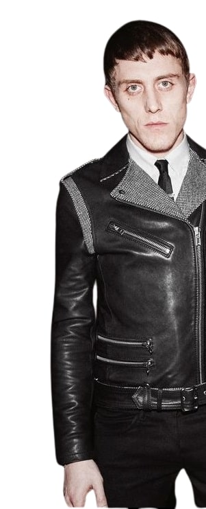

ПОВЕРИТЕЛНОСТ НА ДАННИТЕ
Fin Cosmetics не иска да получава конфиденциална или защитена информация от вас чрез този Сайт.
Личната информация, която Вие по желание може да изпратите до Fin Cosmetics с цел
получаването на продукти или услуги, предлагани от този сайт е под закрилата нa
Закона за защита на личните данни. Fin Cosmetics използва личната информация, с
цел да установи по-добре вашите нужди и интереси и така да можем да ви предоставим
услуги с по-добро качество. В някои случаи ние използваме изпратената от Вас
информация, за да ви помогнем да заявите дадена поръчка или да изпълните дадена
транзакция, да поддържаме контакт с вас, да ви информираме за наши продукти,
услуги и оферти, да персонализираме промоционални оферти.
Сайтът използва "cookies" за ваше удобство и запазване на информацията в процеса на поръчката.
Ние не продаваме и не отдаваме под наем, на лизинг или по какъвто и да е друг начин изпратената
от Вас лична информация на трети лица.
1. Дружеството "Fin Cosmetics" ЕООД е регистрирано в Комисията за защита на личните данни (КЗЛД)
като администратор на лични данни.
2. Доставчикът в платформата Fin Cosmetics предприема мерки за защита на личните данни
на Ползвателя съгласно Закона за защита на личните данни.
3. Ползвателят се съгласява, че Доставчикът на платформата Fin Cosmetics има
право да изпраща по всяко време електронни съобщения към Ползвателя, включително
и бюлетин или предложения за покупка на стоки, докато е налице регистрация на
Ползвателя в електронния магазин на Доставчика в платформата Fin Cosmetics.
4. Ползвателят се съгласява, че Доставчикът на платформата Fin Cosmetics
има право да събира, съхранява и обработва данни, свързани с поръчки на стоки от Сайта,
по-специално: имена, телефон, адрес, и-мейл, IP адрес, както и данни за поведението на
Ползвателя при използването на електронния магазин на Доставчика в платформата Fin Cosmetics.
Със завършване на регистрацията си или попълване на данни при поръчка на сайта без регистрация
или при поръчка по телефона, Ползвателят доброволно дава своето изрично и недвусмислено съгласие
предоставените от него лични данни да бъдат обработвани от Доставчика, служители и/или лица,
които работят под неговото ръководство и/или указания, както и от партньорите на Доставчика
и/или други юридически и физически лица, с които Доставчикът си сътрудничи с цел приемане,
обработване, изпращане и доставка на поръчаните от Ползвателя стоки; за целите на директния
маркетинг и реклама; както и с цел комуникация с Ползвателя относно направена поръчка.
1. Срок за съхранение на личните Ви данни свързани с поръчката и
доставката на стоки (имена, телефон, адрес, и-мейл, IP адрес, поръчки, начислени бонус точки) -
До изтриването им от Вас или до прекратяване на регистрацията Ви. Тук можете да подадете заявка
изтриване/промяна на данни или изтриване на акаунт - info@fincosmetics.com
5. Доставчикът няма намерение да получава конфиденциална или защитена информация
от Ползвателите чрез сайта. Всички материали, информация и други съобщения, излъчени
или изпратени от този Сайт, ще се считат за неповерителни и непредставляващи предмет на права.
Работата с личната информация, която Вие по желание можете да изпратите до Fin Cosmetics с цел
получаване на продукти или услуги, предлагани от този сайт е под закрилата нa Закона за защита
на личните данни. Нямате право да излагате или изпращате от или към този уеб сайт
каквато и да е незаконна, обидна, клеветническа, неприлична, порнографска или друга информация,
която е в нарушение с действащите закони. Досатвчикът използва личната информация с цел да установи
по-добре Вашите нужди и интереси и така да можем да Ви предоставим услуги с по-добро качество.
В някои случаи ние използваме изпратената от Вас информация, за да Ви помогнем да заявите дадена
поръчка или да изпълните дадена транзакция, да поддържаме контакт с Вас, да Ви информираме за
наши продукти, услуги и оферти, да персонализираме промоционални оферти.
6. Сайтът използва т.нар. "cookies" за Ваше удобство и запазване на
информацията в процеса на поръчката. Срокове за съхранение и видове "бисквитки":
1. _ga, _gac, _gid, _zlcmid - използва се за проследяване на поведението на
потребителя, за да подобрим неговото потребителско изживяване на нашия сайт -
срок на съхранение: 26 месеца.
2. cookieconsent_status - запазване на потребителско предпочитание -
срок за съхранение: 1 година.
3. jv_ - чат на живо и докато сърфирате из страниците - 1 ден
4. PHPSESSID, currency, cpsession - необходими за правилното функциониране
на сайта - срок за съхранение: 1 ден
7. Личните данни, които Fin Cosmetics получава при регистрацията на
потребителски профил, ще бъдат използвани единствено за обслужване на Ползвателите –
приемане и изпълнение на поръчки, доставяне на информация под формата на информационен
бюлетин и връзка с Ползвателите в случай на възникнали проблеми, свързани с поръчката.
Доставчикът гарантира, че тези данни няма да бъдат предоставяни под никаква форма на
трети лица или използвани за цели, различни от гореописаните, освен
в случаите предвидени в действащото законодателство.
8. Потребителският профил на конкретен потребител може да бъде изтрит от
базата данни на Fin Cosmetics, заедно с прилежащите към него данни, по всяко време при желание
от страна на Ползвателя, който си направил такъв профил.
9. Можете да заявите изтриване на акаунта си от тук.
10. Потребителят има право на информация и достъп до обработваните от Доставчика
негови лични данни при условията и реда предвидени в Закона за защита на личните данни.
При упражняване на правото си на достъп Ползвателят има право по всяко време да поиска
потвърждение за това, дали отнасящи се до него данни се обработват, информация за целите
на това обработване, за категориите данни и за получателите или категориите получатели,
на които данните се разкриват (в случай че е налице разкриване); да получи съобщение до
него в разбираема форма, съдържащо личните му данни, както и информация за логиката на
всяко автоматизирано обработване на лични данни, отнасящи се до него.
11. Можете да заявите извадка от базата данни, съдържаща всички ваши данни тук.
12. Във връзка с личните данни, предоставени чрез платформата Fin Cosmetics,
Потребителят има право на информираност, достъп до собствените си лични данни;
коригиране (ако данните са неточни); изтриване на личните данни (правото „да бъдеш забравен“);
ограничаване на обработването от страна на администратора или обработващия лични данни; възражение
спрямо обработването на негови лични данни.
13. Ползвателите, абонирани за информационния ни бюлетин (е-Бюлетин),
могат да прекратят абонамента си по всяко време като маркират
съответното поле (чек бокс) в профила си.
14. Можете да забраните използването на бисквитки във Вашия браузър:
Например за браузър „Internet Explorer“ файловете „бисквитки“ могат
да бъдат променяни от Инструменти (Tools) -> Интернет опции (Internet Options) ->
Поверителност (Privacy); в търсачката Mozilla Firefox: Инструменти (Tools) -> Опции (Options) ->
Поверителност (Privacy); докато в търсачката Google Chrome: Настройки (Settings) ->
Разширени настройки (Show Advanced Settings) -> Поверителност (Privacy) -> Настройки за съдържание ->
файлове „Бисквитки“ (Cookies). Начините за достъп могат да се различават
в зависимост от използваната версия на търсачката.
Подробности за управлението на файловете „бисквитки“ при мобилните телефони или други мобилни устройства
могат да се открият в упътването/ инструкцията за ползване на даден телефон или мобилно устройство.
1. Ограничаването на употребата на „бисквитки“ в дадено устройство, прави невъзможно
или значително затруднява правилното използване на Интернет магазина, например
свързано е с невъзможност за поддържане на потребителската сесия след влизане в Профила.
Тук ще намерите всички GDPR инструменти.
Личните данни, които Fin Cosmetics получава при регистрацията, ще бъдат използвани
единствено за обслужване на потребителите – приемане и изпълнение на поръчки,
доставяне на информация под формата на информационен бюлетин и връзка с
потребителите в случай на възникнали проблеми, свързани с поръчката.
Fin Cosmetics гарантира, че въпросните данни няма да бъдат предоставяни под
никаква форма на трети лица или използвани за цели, различни от гореописаните,
освен в случаите предвидени в действащото законодателство.
Потребителският акаунт на конкретен потребител може да бъде изтрит
от базата данни на Fin Cosmetics, заедно с прилежащите към него данни,
по всяко време при желание от страна на потребителя.
Потребителите, абонирани за информационния ни бюлетин (е-Бюлетин),
могат да прекратят абонамента си по всяко време като чекнат съответния чек бокс в профила си.
Fin Cosmetics не иска да получава конфиденциална или защитена информация от
вас чрез този Сайт. Личната информация, която Вие по желание може да
изпратите до Fin Cosmetics с цел получаването на продукти или услуги,
предлагани от този сайт е под закрилата нa Закона за защита на личните
данни. Fin Cosmetics използва личната информация, с цел да установи
по-добре вашите нужди и интереси и така да можем да ви предоставим
услуги с по-добро качество. В някои случаи ние използваме изпратената
от Вас информация, за да ви помогнем да заявите дадена поръчка или да
изпълните дадена транзакция, да поддържаме контакт с вас, да ви информираме
за наши продукти, услуги и оферти, да персонализираме промоционални оферти.
Сайтът използва "cookies" за ваше удобство и запазване на информацията в процеса на поръчката.
Ние не продаваме и не отдаваме под наем, на лизинг или по какъвто и
да е друг начин изпратената от Вас лична информация на трети лица.
1. Дружеството " Fin Cosmetics " ЕООД е регистрирано в Комисията за
на личните данни (КЗЛД) като администратор на лични данни.
2. Доставчикът в платформата Fin Cosmetics предприема мерки за защита на личните данни на
Ползвателя съгласно Закона за защита на личните данни.
3. Ползвателят се съгласява, че Доставчикът на платформата Fin Cosmetics има право да изпраща
по всяко време електронни съобщения към Ползвателя, включително и бюлетин или предложения
за покупка на стоки, докато е налице регистрация на Ползвателя в електронния
магазин на Доставчика в платформата Fin Cosmetics.
4. Ползвателят се съгласява, че Доставчикът на платформата Fin Cosmetics
има право да събира, съхранява и обработва данни, свързани с поръчки на стоки от Сайта,
по-специално: имена, телефон, адрес, и-мейл, IP адрес, както и данни за поведението на
Ползвателя при използването на електронния магазин на Доставчика в платформата Fin Cosmetics.
Със завършване на регистрацията си или попълване на данни при поръчка на сайта без регистрация
или при поръчка по телефона, Ползвателят доброволно дава своето изрично и недвусмислено
съгласие предоставените от него лични данни да бъдат обработвани от Доставчика,
служители и/или лица, които работят под неговото ръководство и/или указания,
както и от партньорите на Доставчика и/или други юридически и физически лица,
с които Доставчикът си сътрудничи с цел приемане, обработване, изпращане и доставка
на поръчаните от Ползвателя стоки; за целите на директния маркетинг и реклама;
както и с цел комуникация с Ползвателя относно направена поръчка.
1. Срок за съхранение на личните Ви данни свързани с поръчката и доставката на
стоки (имена, телефон, адрес, и-мейл, IP адрес, поръчки, начислени бонус точки) -
До изтриването им от Вас или до прекратяване на регистрацията Ви. Тук можете да
подадете заявка за изтриване/промяна на данни или изтриване на акаунт - info@fincosmetics.com
5. Доставчикът няма намерение да получава конфиденциална или защитена информация от
Ползвателите чрез сайта. Всички материали, информация и други съобщения, излъчени или
изпратени от този Сайт, ще се считат за неповерителни и непредставляващи предмет на права.
Работата с личната информация, която Вие по желание можете да изпратите до Fin Cosmetics
с цел получаване на продукти или услуги, предлагани от този сайт е под закрилата нa
Закона за защита на личните данни. Нямате право да излагате или изпращате от или към
този уеб сайт каквато и да е незаконна, обидна, клеветническа, неприлична, порнографска
или друга информация, която е в нарушение с действащите закони. Досатвчикът използва
личната информация с цел да установи по-добре Вашите нужди и интереси и така да можем
да Ви предоставим услуги с по-добро качество. В някои случаи ние използваме изпратената
от Вас информация, за да Ви помогнем да заявите дадена поръчка или да изпълните дадена
транзакция, да поддържаме контакт с Вас, да Ви информираме за наши продукти,
услуги и оферти, да персонализираме промоционални оферти.
6. Сайтът използва т.нар. "cookies" за Ваше удобство и запазване на информацията в
процеса на поръчката. Срокове за съхранение и видове "бисквитки":
1. _ga, _gac, _gid, _zlcmid - използва се за проследяване на поведението на потребителя,
да подобрим неговото потребителско изживяване на нашия сайт - срок на съхранение: 26 месеца.
2. cookieconsent_status - запазване на потребителско предпочитание -
срок за съхранение: 1 година.
3. jv_ - чат на живо и докато сърфирате из страниците - 1 ден
4. PHPSESSID, currency, cpsession - необходими за правилното функциониране
на сайта - срок за съхранение: 1 ден
7. Личните данни, които Fin Cosmetics получава при регистрацията на потребителски профил,
ще бъдат използвани единствено за обслужване на Ползвателите – приемане и изпълнение на поръчки,
доставяне на информация под формата на информационен бюлетин и връзка с Ползвателите в случай на
възникнали проблеми, свързани с поръчката. Доставчикът гарантира, че тези данни няма да бъдат
предоставяни под никаква форма на трети лица или използвани за цели, различни от гореописаните,
освен в случаите предвидени в действащото законодателство.
8. Потребителският профил на конкретен потребител може да бъде изтрит от базата данни на Fin Cosmetics,
заедно с прилежащите към него данни, по всяко време при желание от
страна на Ползвателя, който си направил такъв профил.
9. Можете да заявите изтриване на акаунта си от тук.
10. Потребителят има право на информация и достъп до обработваните от
Доставчика негови лични данни при условията и реда предвидени в Закона за
защита на личните данни. При упражняване на правото си на достъп Ползвателят
има право по всяко време да поиска потвърждение за това, дали отнасящи се до
данни се обработват, информация за целите на това обработване, за категориите
данни и за получателите или категориите получатели, на които данните се
разкриват (в случай че е налице разкриване); да получи съобщение до него в
разбираема форма, съдържащо личните му данни, както и информация за логиката
на всяко автоматизирано обработване на лични данни, отнасящи се до него.
11. Можете да заявите извадка от базата данни, съдържаща всички ваши данни тук.
12. Във връзка с личните данни, предоставени чрез платформата Fin Cosmetics,
Потребителят има право на информираност, достъп до собствените си лични данни;
коригиране (ако данните са неточни); изтриване на личните данни (правото „да бъдеш забравен“);
ограничаване на обработването от страна на администратора или обработващия лични данни;
възражение спрямо обработването на негови лични данни.
13. Ползвателите, абонирани за информационния ни бюлетин (е-Бюлетин),
могат да прекратят абонамента си по всяко време като маркират
съответното поле (чек бокс) в профила си.
14. Можете да забраните използването на бисквитки във Вашия браузър:
Например за браузър „Internet Explorer“ файловете „бисквитки“ могат да бъдат променяни от Инструменти
(Tools) -> Интернет опции (Internet Options) -> Поверителност (Privacy); в търсачката
Mozilla Firefox: Инструменти (Tools) -> Опции (Options) -> Поверителност (Privacy);
докато в търсачката Google Chrome: Настройки (Settings) -> Разширени настройки (Show Advanced Settings) ->
Поверителност (Privacy) -> Настройки за съдържание -> файлове „Бисквитки“ (Cookies).
Начините за достъп могат да се различават в зависимост от използваната версия на търсачката.
Подробности за управлението на файловете „бисквитки“ при мобилните телефони или други мобилни устройства
могат да се открият в упътването/ инструкцията за ползване на даден телефон или мобилно устройство.
1. Ограничаването на употребата на „бисквитки“ в дадено устройство, прави невъзможно или значително затруднява
правилното използване на Интернет магазина, например свързано е с невъзможност за поддържане
на потребителската сесия след влизане в Профила.
Тук ще намерите всички GDPR инструменти.
Личните данни, които Fin Cosmetics получава при регистрацията, ще бъдат използвани единствено за
обслужване на потребителите – приемане и изпълнение на поръчки, доставяне на информация
под формата на информационен бюлетин и връзка с потребителите в случай на възникнали проблеми,
свързани с поръчката. Fin Cosmetics гарантира, че въпросните данни няма да бъдат предоставяни
под никаква форма на трети лица или използвани за цели, различни от гореописаните,
освен в случаите предвидени в действащото законодателство.
Потребителският акаунт на конкретен потребител може да бъде изтрит от базата данни на Fin Cosmetics,
заедно с прилежащите към него данни, по всяко време при желание от страна на потребителя.
Потребителите, абонирани за информационния ни бюлетин (е-Бюлетин), могат да прекратят
абонамента си по всяко време като чекнат съответния чек бокс в профила си.